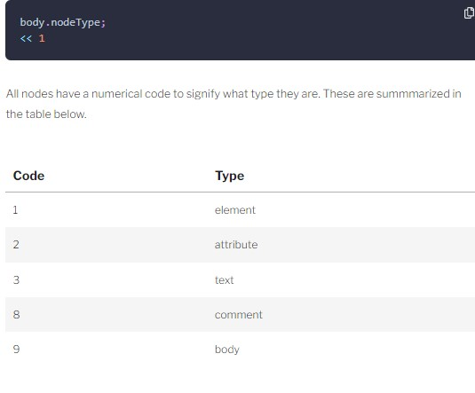

Week03
Document Object Model
Document Object Model (DOM)
- The Document Object Model is a way of representing a page of HTML as a tree of nodes.
- <p class='warning'>Something has gone <em>very</em> wrong!</p>

- The DOM is not actually part of JavaScript because it is language agnostic (although JavaScript is, by far, the language most commonly used with it
- We can use JavaScript to access and modify different parts of a web page using a special built-in object called document
History of DOM
- The DOM level 2 specification was published in 2000 and introduced the popular getElementById() method, which made it much easier to access specific elements on a web page.
- The DOM specification is developed as a living standard.
Getting Elements
- The DOM provides several methods that allow us to access any element on a page.
- const body = document.body;
- 
- We can also use the nodeName property to find the name of the element. for example: body.nodeName
- Legacy DOM Shortcut Methods
- document.body
- document.images
- document.links
- document.anchors
- document.forms
- getElementById()
- getElementByTagName() const listItems = document.getElementsByTagName('li');
- getElementByClassName() const heroes = document.getElementsByClassName('hero');
- document.querySelector() method allows you to use CSS notation to find the first element in the document that matches that matches a CSS selector provided as an argument
- document.querySelectorAll()
- The querySelector() method can be called on any element, rather than justdocument. For example, we can get a reference to the ul element
- const batman = ul.querySelector('li#bats')
- jQuery is a popular JavaScript framework that makes it very easy to find elements on a page using a CSS-style syntax. It uses document.querySelectorAll() in the background whenever it can.
- The parentNode(),previousSibling(), nextSibling(), childNodes() and children() methods can be used to navigate around the DOM tree.
- getAttribute() method returns the value of the attribute provided as an argument
Setting An Element's Attributes
- The setAttribute can change the value of an element’s attributes. It takes two arguments: the attribute that you wish to change, and the new value of that attribute.
- wonderWoman.setAttribute('id','amazon');
wonderWoman.getAttribute('id');
<< 'amazon'
- wonderWoman.id
- wonderWoman.className
- wonderWoman.classList.add()
- wonderWoman.classList.remove()
- wonderWoman.classList.toggle()
- wonderWoman.classList.contains()
- document.createElement('')
- document.createTextNode('')
- appendChild()
- flash.appendChild(flashText);
- const flash = document.createElement('li');
flash.textContent = 'Flash';
- function createElement (tag,text) {
const el = document.createElement(tag);
el.textContent = text;
return el
}
- const aquaman = createElement('li','Aquaman');
- heroes.insertBefore(aquaman,wonderWoman);
Updating CSS
- Every element node has a style property. This can be used to dynamically modify the presentation of any element on a web page.
- The style property can also be used to see what CSS styles have been set on an element, but unfortunately it applies only to inline styles, and styles set using JavaScript.
- There is a function called getComputedStyle() that will retrieve all the style information of an element that is given as a parameter.
- getComputedStyle(superman).getPropertyCSSValue('color').cssText;